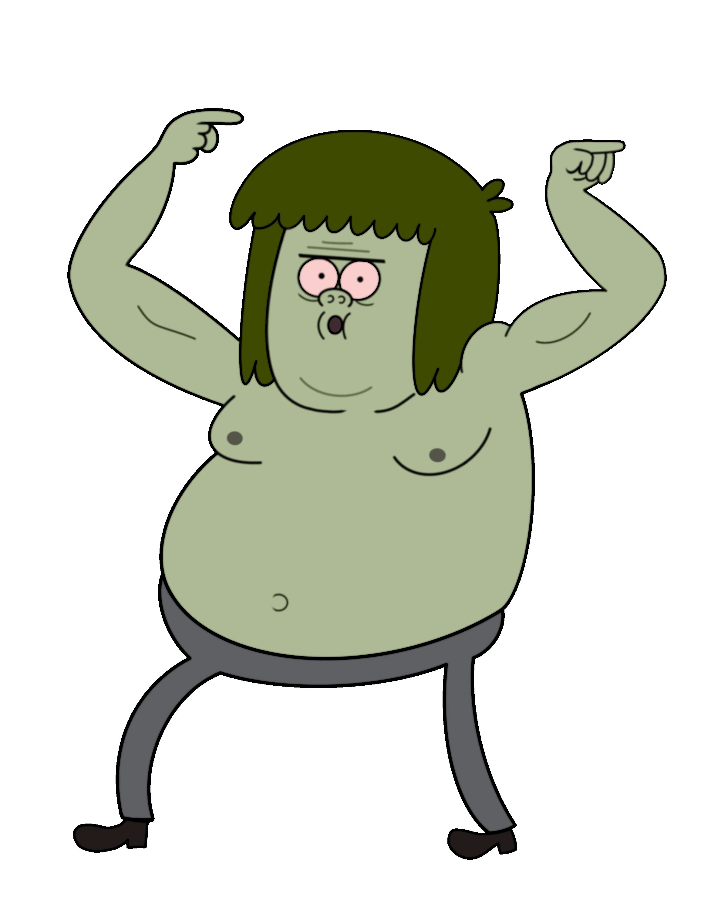

Personaggi Principali
Muscle Man
Muscle Man è un lavoratore del parco, famoso per il suo carattere volgare e le sue battute su sua madre ("MIA MADRE!"). Nonostante i suoi difetti, dimostra di avere un grande cuore. Alla fine si sposa con Starla e hanno dei figli.